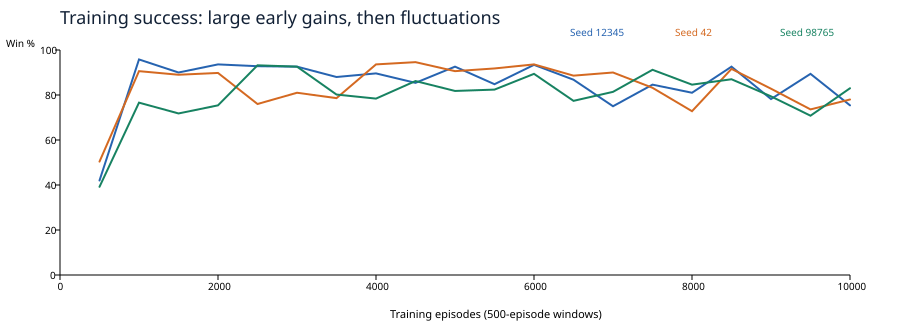
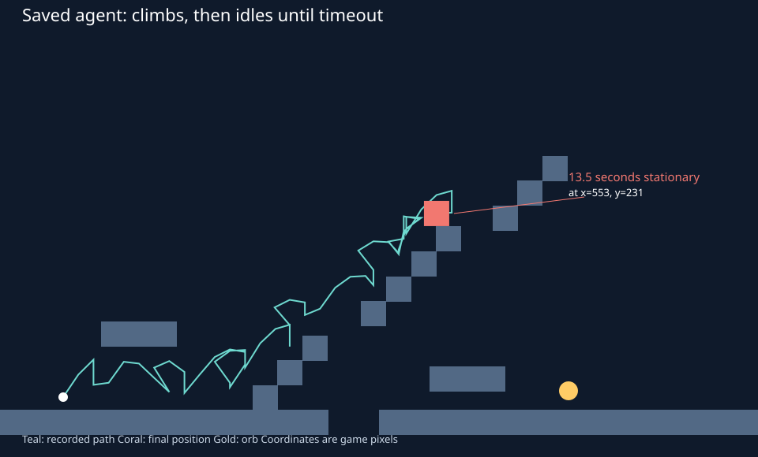

Experiment · October 16, 2026 · Current staircase level
It learns the route, but training success can hide a stuck policy.
Practical checkpoint: around 3,000 training episodes on this level. All three fresh agents passed their evaluation episodes there. The sampled 5,000- and 10,000-episode policies also passed, but their routes generally became slower. This is a useful point to start selecting the best checkpoint, not a proven convergence threshold.
Three fresh seeds trained for 10,000 episodes each. Nine checkpoints per seed were evaluated with exploration and learning disabled. Your existing 16,988-episode checkpoint was also tested separately. Gameplay and learning settings were unchanged; the experiments ran on an isolated copy of the level.
The learning curve

The main training gains occurred in the first 600–1,000 episodes. Exploration reached its 5% floor after episode 598. Later training kept changing the Q-table, but produced no sustained improvement in training success. The last 1,000 episodes averaged 78.4% success across seeds, compared with 87.6% during episodes 601–1,000.
| Training episodes | Mean success | Seeds 12345 / 42 / 98765 |
|---|
| 1–100 | 5.7% | 8.0% / 6.0% / 3.0% |
| 101–300 | 36.2% | 33.5% / 48.5% / 26.5% |
| 301–600 | 76.4% | 76.7% / 80.0% / 72.7% |
| 601–1,000 | 87.6% | 96.0% / 90.5% / 76.2% |
| 1,001–2,000 | 84.9% | 91.8% / 89.4% / 73.6% |
| 2,001–3,000 | 88.0% | 92.7% / 78.5% / 92.9% |
| 3,001–5,000 | 86.6% | 88.9% / 89.3% / 81.7% |
| 5,001–10,000 | 83.8% | 84.1% / 84.6% / 82.7% |
| 9,001–10,000 | 78.4% | 82.4% / 75.8% / 76.9% |
Evaluation reveals regressions
Each cell shows orb collections out of 30 episodes, followed by mean episode duration and actual jump takeoffs. A timeout lasts 20 seconds. With a fixed spawn and a mostly deterministic greedy policy, these often repeat the same trajectory; they are not 30 independent levels or training seeds.
| Trained episodes | Seed 12345 | Seed 42 | Seed 98765 |
|---|
| 0 | 0/309.7s · 14.7 jumps | 0/3013.5s · 21.3 jumps | 0/3012.1s · 19.1 jumps |
| 100 | 0/3020.0s · 0.0 jumps | 0/3020.0s · 0.0 jumps | 0/3020.0s · 0.0 jumps |
| 300 | 0/3020.0s · 0.0 jumps | 30/305.5s · 9.0 jumps | 0/3020.0s · 33.0 jumps |
| 600 | 30/307.7s · 11.0 jumps | 30/306.0s · 10.0 jumps | 0/3020.0s · 30.0 jumps |
| 1000 | 0/3020.0s · 5.0 jumps | 30/307.0s · 12.0 jumps | 30/3011.2s · 21.0 jumps |
| 2000 | 30/307.6s · 12.0 jumps | 30/307.2s · 12.0 jumps | 0/3020.0s · 34.0 jumps |
| 3000 | 30/305.6s · 9.0 jumps | 30/308.6s · 15.0 jumps | 30/306.6s · 11.0 jumps |
| 5000 | 30/305.8s · 10.0 jumps | 30/307.2s · 13.0 jumps | 30/307.3s · 13.0 jumps |
| 10000 | 30/306.7s · 10.0 jumps | 30/309.9s · 17.0 jumps | 30/308.0s · 13.0 jumps |
Seed 12345 succeeded at 600 episodes, then failed at 1,000. Seed 98765 succeeded at 1,000, then failed at 2,000. All three passed the sampled evaluations from 3,000 onward. More training did not reliably shorten the route: seed 42 went from 7.2 seconds and 13 jumps at 5,000 episodes to 9.9 seconds and 17 jumps at 10,000.
Your saved agent: exploration is rescuing it
Greedy evaluation
0 / 30 orb collections
30 timeouts, no deaths
13.5 seconds stationary per episode
Same frozen Q-table, 5% random actions
89 / 100 orb collections
4 timeouts, 7 deaths
No Q-value updates during this test

The saved agent makes 12 jumps, reaches approximately (553, 231), then selects idle until timeout. There are no tied maximum values on this trajectory. The stalled state's idle value is 0.159583; right is 0.158883. That tiny preference is enough to make it choose idle every decision.
The checkpoint records 13,620 wins in 16,988 historical training episodes (80.2%). It does not record which level layouts produced those wins, so that historical rate cannot establish performance on the current map. The frozen-table comparison above does establish that random actions can rescue this specific policy on this map.
Where it fails
- It merges situations that need different decisions. The idle state is
000101|1|1|0: only down and down-right rays near, orb right and below, grounded. The same key stalled seed 12345 at (387, 370) after 1,000 training episodes. A separate placement probe found this key on seven different surface positions, with orb distances from 167 to 600 pixels. Those probe positions demonstrate identical observations, not that every position was visited during training.
- It oscillates at observation boundaries. At 300 episodes, seed 12345 alternates between
x=272.0 (choose right) and x=291.2 (choose left) every 0.1 seconds before the first wall. The right-ray bit changes; the table sends it back. This repeats until timeout.
- It can turn jumping into a loop. Seed 98765 at 2,000 episodes makes 34 actual jumps in 20 seconds while circling the first staircase/gap area, without collecting the orb. This is more than a jump icon appearing while airborne: the takeoff counter measures real grounded-to-upward movement.
- Its inputs and reward do little to distinguish a useful move from a prolonged stall. There is no elapsed-time input and no per-step or jump cost. Timeout gives −1 only at the end. At discount 0.95 per decision, a penalty 10 seconds away is weighted about 0.0059; 20 seconds away, about 0.000035. This short horizon and the merged states are plausible contributors to the behavior, not independently proven causes from these tests.
Why it jumps so much
Three of the six actions include jump, so uniform exploration requests it about half the time. In the air, adding jump usually has no immediate effect, but the chosen action is held for six physics ticks: if the player lands during that interval, the still-held jump request can launch it again. There is no double jump or variable jump height involved.
There is no explicit reward for avoiding unnecessary jumps. The agent can solve the level with a messy route, and a state used near an obstacle can also appear on ordinary terrain. A jump-request count therefore differs from an actual takeoff count; the table above uses actual takeoffs. These tests did not establish an optimal minimum-jump route.
What I would test next
- Select checkpoints by evaluation success, then completion time. Start checking around 500 episodes and keep the best, rather than assuming the latest table is best. Count timeouts separately from deaths.
- Try a small time cost as a separate reward experiment. Compare it against this unchanged baseline. Avoid adding a jump penalty first; it could discourage jumps the level actually needs.
- Then try a small state improvement. Coarse orb-distance or vertical-offset bins could distinguish some merged locations while keeping the table explainable. Test one change at a time; these measurements do not yet show which adjustment works best.
Method and limits
- Godot 4.7.1; existing Level, Player, Agent and QLearningAgent code; physics 60 Hz; one action per six ticks; episode limit 20 seconds. Alpha 0.1, gamma 0.95, epsilon 1.0 → 0.05, decay 0.995 per episode.
- Fresh seeds: 12345, 42, 98765. Training ran uninterrupted; evaluation happened afterward using saved checkpoints. Evaluation uses a separate agent and asserts that it leaves the training table and RNG unchanged.
- The diagnostic trainer and normal headless worker produced exactly identical checkpoint contents after 1,000 episodes with seed 12345: 689 wins and 106,706 updates.
- 810 checkpoint evaluation episodes, 30 saved-agent greedy episodes, and 100 frozen-table episodes with 5% exploration. No random starts or alternate maps were tested. Success on this fixed level does not establish generalization.
- Actual takeoffs were counted when the player was grounded before a tick and moving upward afterward. Stationary means less than 0.01 pixels movement in a tick. Decision traces were retained for the first three episodes at each checkpoint.
- The 5% exploration probe uses seed 2027; the greedy saved-table probe uses 2026. Greedy saved-table trajectories had no ties and were identical, so random tie-breaking does not explain their failure. The probe changes exploration only, with learning disabled.
- Source fingerprints and the frozen level are included for reproducibility. The normal project and your default saved Q-table were not edited by this experiment. The level history of the existing checkpoint is unknown.
Structured results · Frozen project, diagnostic scripts, raw results and checkpoints